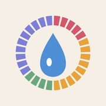

ほんとの体重体重計の数字から、周期のむくみを引く
プライバシーポリシー
制定日:2026年10月2日
iPhoneアプリ「ほんとの体重」(以下「本アプリ」)における利用者の情報の取り扱いについて定めます。
集める情報
本アプリは、利用者の個人情報や健康に関する情報を、開発者や第三者のサーバーへ送信・収集しません。アカウント登録もありません。
端末に保存する情報
利用者が入力した次の内容は、お使いのiPhoneの中だけに保存されます。
- 日付ごとの体重
- 生理がはじまった日
周期の長さやむくみの目安は、これらの記録から端末の中で計算します。記録はiPhone本体のバックアップ(iCloudバックアップなど、利用者ご自身の設定によるもの)に含まれることがあります。本アプリを削除すると、端末内のデータも削除されます。
シェア機能
シェア用の画像は端末内で作られ、体重そのものは載りません(減った量と周期の位置だけです)。画像は、利用者がシェアの操作をして送り先を選んだときだけ、その送り先(SNSやメッセージアプリなど)に渡ります。送り先での取り扱いは、各サービスの規約に従います。
広告・解析
本アプリは広告を表示せず、利用状況の解析ツールやトラッキングも使いません。
健康に関する注意
本アプリが表示するむくみの量や生理日の見通しは、一般的な周期の傾向と利用者の記録から出した目安です。医療上の診断や助言ではなく、避妊や妊娠の判断には使えません。体調や周期について気になることがあれば、医師にご相談ください。
このポリシーの変更
内容を変更する場合は、このページを更新してお知らせします。
お問い合わせ
サポートページをご覧ください。